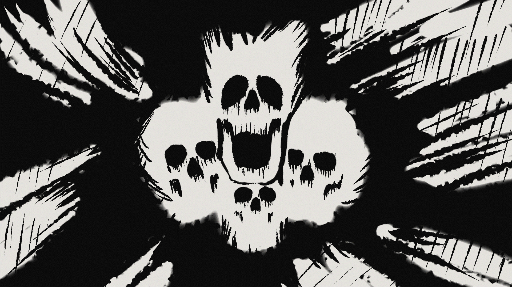
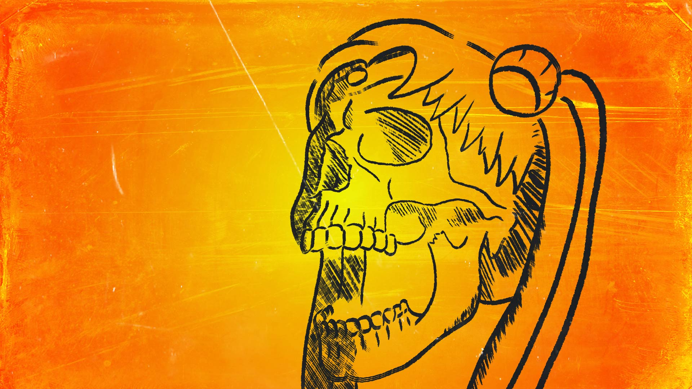
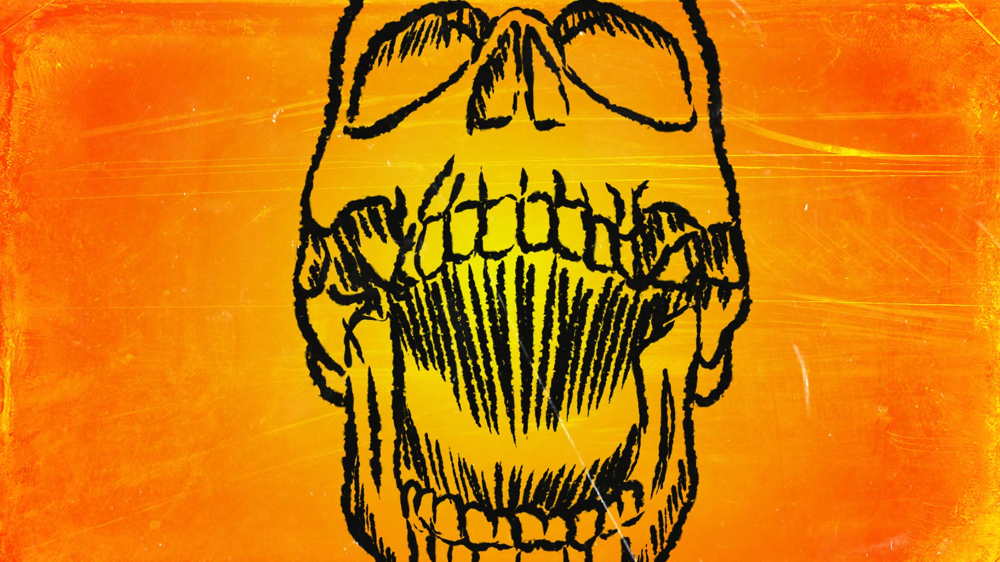
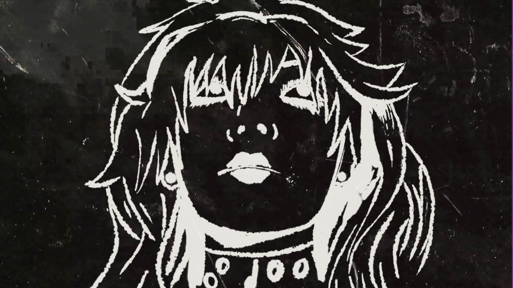

Animación-Videoclip · 2D
Sailor Punk
Videoclip animado en 2D para la banda de punk Sailor Punk. Un recorrido lleno de energía, adrenalina y color, construido desde una estética directa, vibrante y de alto impacto visual.
Dirección visual
Ritmo, color y actitud punk en animación 2D
La propuesta visual busca amplificar la fuerza de la música mediante composición gráfica, movimiento expresivo y una paleta intensa. Cada secuencia está pensada para sostener la energía del videoclip y convertirla en una experiencia visual.
Secuencias
Energía gráfica en movimiento





Fotogramas
Momentos clave del videoclip



Video